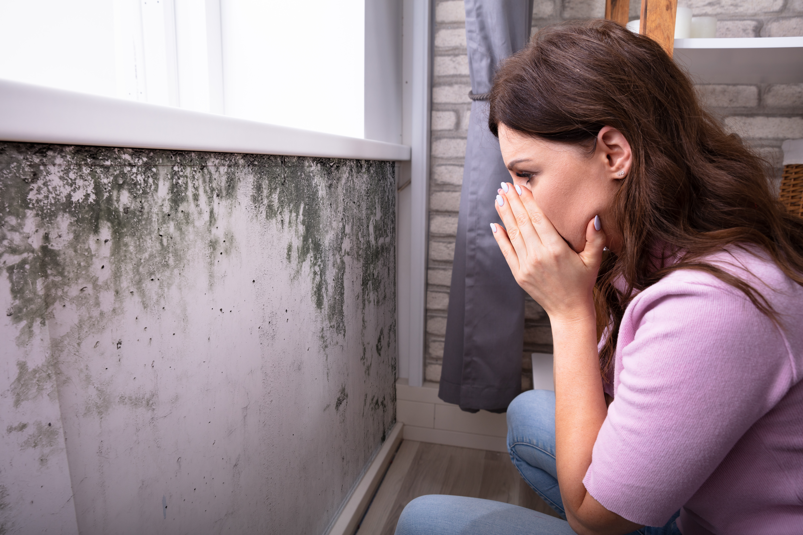

We provide fast, professional mold remediation services that remove mold at the source, stop it from spreading, and restore your home safely so you can get back to normal without the stress.
Finding mold in your home can feel urgent—and it should be. Mold spreads quickly, damages materials, and affects indoor air quality. If you’re searching how to get rid of mold in your house fast, the key is acting immediately and doing it the right way. While small surface issues may seem manageable, most mold problems go deeper than what you can see. Fast, effective removal requires addressing both the mold and the moisture causing it.
The first step in mold removal in your home is identifying the affected areas and limiting exposure. Mold spores travel easily through the air, so disturbing the area without proper precautions can spread contamination to other rooms.
If the affected area is small, you can take initial steps like increasing airflow and reducing moisture. However, scrubbing mold with household cleaners often only removes surface staining, not the root of the problem. Mold grows into porous materials like drywall and wood, which means it can continue spreading even after it looks “clean.”
Professional mold remediation services focus on containment, safe removal, and preventing regrowth—not just surface cleaning.
If you need to act quickly before professionals arrive, there are a few steps you can take to slow the spread of mold:
These steps help reduce the risk of mold spreading, but they are not a complete solution. The goal is to stabilize the situation until proper remediation can begin.
Many homeowners search for what kills mold instantly, often turning to bleach or store-bought sprays. While these products may remove visible discoloration, they do not eliminate mold at its root.
Mold embeds itself into materials, and surface treatments cannot reach deep contamination. In some cases, using the wrong cleaning method can actually release more spores into the air, making the problem worse.
Professional mold removal uses specialized antimicrobial treatments, HEPA filtration, and containment systems to fully eliminate mold safely and effectively.
Even after attempting cleanup, mold can continue growing if the source of moisture isn’t resolved. Watch for these warning signs:
These signs indicate that mold is still active behind surfaces or in hidden areas like insulation or flooring. At this stage, professional mold inspection and remediation is necessary.
Mold almost always follows moisture. Leaks, flooding, roof damage, and humidity issues create the perfect environment for growth. In fact, mold can begin forming within 24 to 48 hours after water exposure.
Even small leaks behind walls or under sinks can lead to major mold problems over time. That’s why water damage restoration is often part of the mold removal process. If moisture isn’t fully removed, mold will return no matter how many times it’s cleaned.
Addressing the source of water is just as important as removing the mold itself.
If your goal is speed, safety, and complete removal, professional remediation is the most effective option. Trained technicians use advanced equipment to locate hidden mold, contain affected areas, and remove contamination without spreading it.
The professional process typically includes:
This approach ensures the mold is completely removed and prevents it from returning. Attempting to handle large or hidden mold issues on your own often leads to longer timelines and higher costs.
The timeline for mold remediation depends on the size of the affected area and how deeply the mold has spread. Small, localized issues may be resolved in a few days, while larger problems can take longer if structural materials need to be replaced.
Acting early significantly reduces the time required. The longer mold is allowed to grow, the more extensive the remediation process becomes.
Once mold is removed, prevention is key. Controlling moisture levels and improving airflow helps keep your home protected.
Important prevention steps include:
These steps help ensure your home stays mold-free after remediation is complete.
If you’re looking for fast, reliable mold removal that actually solves the problem, S.W.A.T. Restoration is ready to help. Our team provides expert mold remediation, thorough inspections, and complete restoration services designed to eliminate mold at the source. We respond quickly, contain the problem, and restore your home safely so you can move forward with confidence.
Don’t wait for mold to spread or cause more damage. Contact S.W.A.T. Restoration today for professional help and get your home back to a clean, safe condition—fast.